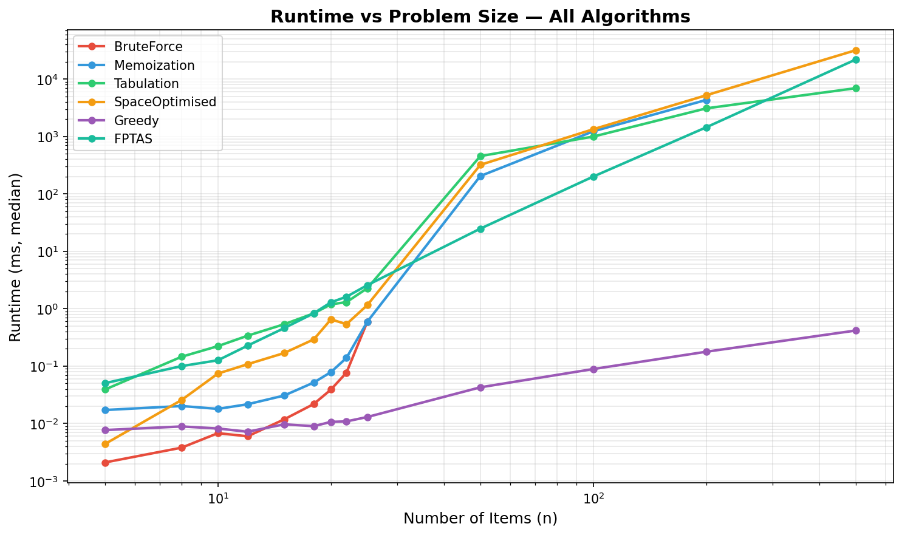

Results: Runtime vs Problem Size

What the chart shows
- Brute force spikes off the chart after n = 25 — the O(2ⁿ) wall.
- Memoization, Tabulation, SpaceOpt grow linearly in n at fixed W (the three middle lines stay close).
- Greedy is essentially flat — O(n log n), independent of W.
- FPTAS sits between greedy and DP — its scaled DP is small but not free.
Discrepancy worth noting
Tabulation often beats memoization in practice despite identical asymptotic cost — no recursion overhead, better cache locality.